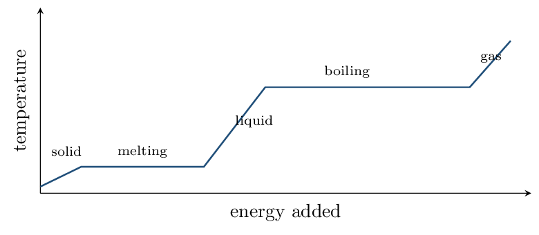

Nearly every error in thermochemistry is a sign error, and nearly every sign error comes from losing track of whose point of view you are taking.
Fix the convention now and use it without exception: signs are always written from the system's point of view. Heat entering the system is positive; heat leaving is negative. When a reaction warms the water in a calorimeter, the water gained heat (\(q_{\text{water}} > 0\)) and the reaction lost it (\(q_{\text{rxn}} < 0\)). Those are the same event described from two sides, and the exam will ask for both.
Energy, Heat, and Direction CED 6.1–6.3 • Zumdahl §6.1
- Classify processes as endothermic or exothermic and assign signs.
- Explain heat transfer and thermal equilibrium at the particle level.
Read: Zumdahl §6.1 • PDF pp. 283–290
- Units of energy: joules (J)
- Temperature measures the average kinetic energy of particles.
- Breaking a bond requires energy or releases it? requires
- Which has more energy, a gas or the same substance as a liquid? gas
INSTRUCTION A • System, surroundings, and sign 25 min
The convention that prevents most errors CED 6.1
SP 5The system is the part you are studying — usually the reaction. The surroundings are everything else, including the solvent, the calorimeter, and the thermometer.
| Process | Heat | \(q_{\text{system}}\) | Surroundings |
|---|---|---|---|
| Exothermic | released by the system | negative | warm up |
| Endothermic | absorbed by the system | positive | cool down |
This inversion is the most-missed idea in the unit. When a question gives you a temperature change, your first move should be to write down which thing changed temperature.
Energy diagrams CED 6.2
An energy diagram plots potential energy against reaction progress.
- Products below reactants \(\Rightarrow\) exothermic, \(\Delta H < 0\).
- Products above reactants \(\Rightarrow\) endothermic, \(\Delta H > 0\).
- \(\Delta H\) is the difference between products and reactants — and it says nothing about how fast the reaction goes.
INSTRUCTION B • Heat transfer and thermal equilibrium 20 min
What actually moves CED 6.3
SP 6Put a hot metal block into cool water. At the particle level:
- Fast-moving metal atoms collide with slower water molecules and transfer kinetic energy.
- Energy flows from hot to cold — always, and never the reverse on its own.
- Transfer continues until both reach the same temperature: thermal equilibrium.
- At equilibrium the transfer has not stopped — collisions continue, but energy now flows both ways at equal rates.
Say “heat is transferred,” not “the block has a lot of heat.” Heat is energy in transit because of a temperature difference. What a body contains is internal energy; heat is what crosses the boundary.
The exam does penalize “the hot object gives its heat to the cold object” when the question asks for a particle-level explanation — it wants collisions and kinetic-energy transfer.
APPLICATION • Signs and directions 20 min
- Ammonium nitrate dissolves and the beaker becomes noticeably cold. Give the sign of \(q\) for the dissolving process, the sign for the water, and classify it.
- Two blocks of the same metal, one at 80 °C and one at 20 °C, are placed in contact and left. Describe the final state and what is happening in it.
Heat Capacity and Calorimetry CED 6.4 • Zumdahl §6.2
- Use \(q = mc\Delta T\) in both directions.
- Determine \(\Delta H\) per mole from calorimetry data.
Read: Zumdahl §6.2 • PDF pp. 290–297
- Exothermic means \(q_{\text{system}}\) is: negative
- Heat flows from: hot to cold
- Specific heat of water: 4.18 J/g/°C
INSTRUCTION A • The workhorse equation 25 min
\(q = mc\Delta T\) CED 6.4
SP 5 \[ q = mc\Delta T \qquad \Delta T = T_{\text{final}} - T_{\text{initial}} \] Specific heat \(c\) is the energy needed to raise 1 g by 1 °C. Water's is unusually large at 4.18 J/g/°C, which is why it is used as the absorbing medium in calorimetry and why coastal climates are mild.How much energy raises 50.0 g of water from 20.0 °C to 80.0 °C? \[ q = (50.0)(4.18)(60.0) = 12{,}540~\text{J} = \mathbf{12.5}~\text{kJ} \] Positive, because the water absorbed energy.
INSTRUCTION B • Calorimetry: from \(q\) to \(\Delta H\) per mole 20 min
The two-step chain CED 6.4
SP 5A calorimeter measures the temperature change of the water. Getting to \(\Delta H\) takes two moves:
- \(q_{\text{water}} = mc\Delta T\), then \(q_{\text{rxn}}\) equals \(-q_{\text{water}}\).
- Divide by the moles of the limiting reactant to get kJ/mol.
A reaction is run in 100.0 g of water in a coffee-cup calorimeter. The temperature rises by 5.20 °C, and 0.0250 mol of the limiting reactant was used.
Step 1 — heat absorbed by the water: \[ q_{\text{water}} = (100.0)(4.18)(5.20) = 2174~\text{J} \] The water gained it, so the reaction lost it: \(q_{\text{rxn}} = -2174\) J. Step 2 — per mole: \[ \Delta H = \frac{-2174~\text{J}}{0.0250~\text{mol}} = -86{,}900~\mathrm{J/mol} = \mathbf{-86.9}~\mathrm{kJ/mol} \]Negative, as the temperature rise already told us.
Two habits worth building here. First, the minus sign in step 1 is not optional — omitting it reports an exothermic reaction as endothermic. Second, \(\Delta H\) is per mole; a bare answer in kilojoules with no “per mole” loses the point even when the arithmetic is right.
Note also that we used the water's mass and specific heat, not the reactants'. The water is the surroundings, and it is what the thermometer was in.
APPLICATION • Thermal equilibrium calculations 20 min
- A 50.0 g metal block at 100.0 °C is dropped
into 100.0 g of water at 22.0 °C. The final
temperature is 24.6 °C. Find the specific heat of the
metal.
\(q_{\text{water}} = (100.0)(4.18)(2.6) = 1087\) J, gained. So the metal lost 1087 J: \(-1087 = (50.0)(c)(24.6 - 100.0) = (50.0)(c)(-75.4)\), giving \(c = \mathbf{0.288}~\mathrm{J/g/{}^\circ C}\). Much smaller than water's — typical of a metal.
- Why does the water's temperature change so little while the metal's changes by more than 75 °C?
Energy of Phase Changes CED 6.5 • Zumdahl §10.8
- Calculate the energy of a phase change.
- Read a heating curve and choose the right equation for each region.
Read: Zumdahl §10.8 • PDF pp. 523–530
- \(q = mc\Delta T\) applies when what is changing? temperature
- \(\Delta H_{\text{fus}}\) for water: 6.02 kJ/mol
- \(\Delta H_{\text{vap}}\) for water: 40.7 kJ/mol
INSTRUCTION A • Temperature does not change during a phase change 25 min
Two different equations CED 6.5
SP 5Phase changing, temperature constant: \(q = n\Delta H_{\text{fus}}\) or \(n\Delta H_{\text{vap}}\)
During melting or boiling, the added energy goes into overcoming intermolecular forces, not into speeding the particles up. That is why the temperature holds steady on a heating curve, and it is the explanation the exam wants.
Vaporizing one mole costs nearly seven times as much as melting one mole — because melting only loosens the lattice, while boiling separates the molecules entirely.
INSTRUCTION B • Reading a heating curve 20 min
Five regions, five calculations CED 6.5
SP 4
The sloped regions use \(q = mc\Delta T\); the flat regions use \(q = n\Delta H\).
The boiling plateau is always much longer than the melting plateau, for the same reason vaporization costs more energy.
Take 25.0 g of ice from -10.0 °C to steam at 110.0 °C. (\(c_{\text{ice}} = 2.09\), \(c_{\text{water}} = 4.18\), \(c_{\text{steam}} = 2.03\) J/g/°C; \(n = 25.0/18.02 = 1.39\,\mathrm{mol}\))
| Region | Equation | \(q\) (kJ) | ||
|---|---|---|---|---|
| warm ice \(-10 \to 0\) | \(mc\Delta T\) | 0.52 | ||
| melt at 0 | thinsp; | deg;C | \(n\Delta H_{\text{fus}}\) | 8.35 |
| warm water \(0 \to 100\) | \(mc\Delta T\) | 10.45 | ||
| boil at 100 | thinsp; | deg;C | \(n\Delta H_{\text{vap}}\) | 56.47 |
| warm steam \(100 \to 110\) | \(mc\Delta T\) | 0.51 | ||
| Total | 76.30 |
Boiling alone is 74% of the total. If a heating-curve question asks which step dominates, that is nearly always the answer.
APPLICATION • Phase-change reasoning 20 min
- Calculate the energy to melt 90.0 g of ice at
0 °C.
\(n = 90.0/18.02 = 4.99\,\mathrm{mol}\); \(q = (4.99)(6.02) = \mathbf{30.1}~\text{kJ}\)
- Explain, in terms of intermolecular forces, why the temperature stays constant while ice melts even though energy is being added.
- Why is a steam burn worse than a burn from the same mass of water at 100 °C?
Enthalpy of Reaction and Hess's Law CED 6.6, 6.9 • Zumdahl §6.2–6.3
- Scale \(\Delta H\) with the amount of substance reacting.
- Combine reactions using Hess's law.
Read: Zumdahl §6.2–6.3 • PDF pp. 290–301
- During a phase change, \(\Delta T\) is: zero
- \(\Delta H_{\text{vap}}\) is larger than \(\Delta H_{\text{fus}}\) because: boiling separates molecules entirely
- Exothermic \(\Delta H\) is: negative
INSTRUCTION A • \(\Delta H\) is an extensive quantity 25 min
Enthalpy scales with amount CED 6.6
SP 5A thermochemical equation carries its \(\Delta H\) for the amounts written: \[ \ce{CH4(g) + 2O2(g) -> CO2(g) + 2H2O(l)} \qquad \Delta H = -890.5~\text{kJ} \] means 890.5 kJ released per one mole of \(\ce{CH4}\).
- Double the coefficients \(\Rightarrow\) \(\Delta H\) doubles.
- Reverse the reaction \(\Rightarrow\) \(\Delta H\) changes sign.
- Half a mole of \(\ce{CH4}\) releases 445.3 kJ.
INSTRUCTION B • Hess's law 20 min
Enthalpy is a state function CED 6.9
SP 5never on the route taken.
So reactions can be added, and their \(\Delta H\) values add with them.
Two rules when manipulating:
- Reverse a reaction \(\Rightarrow\) flip the sign of \(\Delta H\).
- Multiply a reaction by \(n\) \(\Rightarrow\) multiply \(\Delta H\) by \(n\).
Burning carbon straight to \(\ce{CO}\) cannot be done cleanly — some \(\ce{CO2}\) always forms. But these two can be measured:
\begin{align*} (1)&\quad \ce{C(gr) + O2(g) -> CO2(g)} &\Delta H &= -393.5~\text{kJ} \\ (2)&\quad \ce{CO(g) + \tfrac{1}{2}O2(g) -> CO2(g)} &\Delta H &= -283.0~\text{kJ} \end{align*} Target: \(\ce{C(gr) + \tfrac{1}{2}O2(g) -> CO(g)}\).Take (1) as written, and reverse (2) so \(\ce{CO}\) ends up as a product — flipping its sign: \begin{align*} \ce{C(gr) + O2 &-> CO2} &\Delta H &= -393.5 \\ \ce{CO2 &-> CO + \tfrac{1}{2}O2} &\Delta H &= +283.0 \\ \hline \ce{C(gr) + \tfrac{1}{2}O2 &-> CO} &\Delta H &= \mathbf{-110.5}~\text{kJ} \end{align*}
\(\ce{CO2}\) cancels, and half the oxygen cancels. The answer matches the tabulated \(\Delta H_f^\circ\) of \(\ce{CO}\) exactly — a good check.APPLICATION • Scaling and combining 20 min
- For \(\ce{2CO(g) + O2(g) -> 2CO2(g)}\), \(\Delta H = -566\) kJ. How much energy is released by 1.00 mol of \(\ce{CO}\)? 283 kJ
- Give \(\Delta H\) for \(\ce{2CO2(g) -> 2CO(g) + O2(g)}\). \(+566\) kJ
- A student combining reactions forgets to flip the sign when reversing one. If the correct answer is \(-110.5\) kJ, what do they report, and what is the size of the error?
Bond and Formation Enthalpies CED 6.7, 6.8 • Zumdahl §8.8, §6.4
- Estimate \(\Delta H\) from average bond enthalpies.
- Calculate \(\Delta H^\circ\) from enthalpies of formation.
Read: Zumdahl §8.8 • PDF pp. 412–415
Read: Zumdahl §6.4 • PDF pp. 301–308
- Reversing a reaction does what to \(\Delta H\)? flips the sign
- Breaking bonds is endothermic or exothermic? endothermic
- \(\Delta H_f^\circ\) of \(\ce{O2(g)}\): 0
INSTRUCTION A • Two routes with opposite conventions 25 min
Bond enthalpies CED 6.7
SP 5Breaking a bond always requires energy; forming one always releases it. So:
\[ \boxed{\;\Delta H = \sum D(\text{bonds broken}) - \sum D(\text{bonds formed})\;} \]A sanity check that costs nothing: if more energy is released forming bonds than was spent breaking them, the reaction is exothermic and your answer must come out negative.
Formed: \(2(427) = 854\) kJ. \[ \Delta H = 671 - 854 = \mathbf{-183}~\text{kJ} \] Exothermic, as the negative sign should confirm.
Enthalpies of formation CED 6.8
\(\Delta H_f^\circ\) is the enthalpy change forming one mole of a compound from its elements in their standard states. By definition, an element in its standard state has \(\Delta H_f^\circ =\) 0. \[ \Delta H^\circ_{\text{rxn}} = \sum n\Delta H_f^\circ(\text{products}) - \sum n\Delta H_f^\circ(\text{reactants}) \]APPLICATION • Both routes 20 min
- Calculate \(\Delta H^\circ\) for \(\ce{N2 + 3H2 -> 2NH3}\) from
\(\Delta H_f^\circ(\ce{NH3}) = -46\) kJ/mol.
\(2(-46) - 0 = \mathbf{-92}~\text{kJ}\)
- Now estimate it from bond enthalpies
(\(\ce{N#N}\) 941, \(\ce{H-H}\) 432, \(\ce{N-H}\) 391).
Broken \(941 + 3(432) = 2237\); formed \(6(391) = 2346\); \(\Delta H = \mathbf{-109}~\text{kJ}\) — the same sign and rough size as \(-92\), but not equal
- Account for the difference between your two answers.